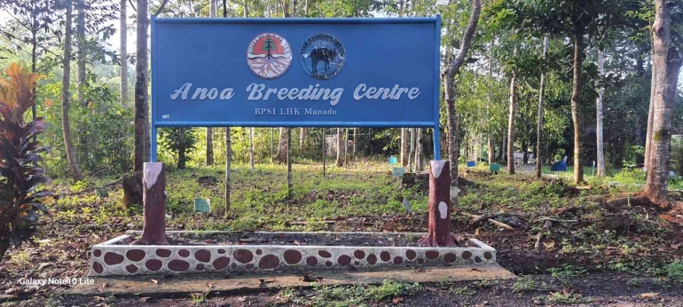

BPSILHK bekerja sama dengan Balai Konservasi dan Sumber Daya Alam (BKSDA) Manado telah melaksanakan tugas dan fungsi penerapan standar perangkat lingkungan hidup dan kehutanan serta telah mengembangkan program perlindungan ekosistem Anoa yang disebut dengan UPT Anoa Breeding Center (ABC). Namun, bukan hal baru di Balai Besar Penerapan Standar Hukum Lingkungan Hidup dan Kehutanan Manado (BPSILHK) untuk melihat langsung, mempelajari, dan mengunjungi kawasan ex-situ yang “mirip” dengan habitat alami. Peran Anoa Breeding Center (ABC) sebagai standar konsultasi, pendidikan, ilmu pengetahuan dan teknologi, wisata edukasi, nasehat teknis, pemukiman kembali dan penyelamatan. Menurut BPSILHK Manado Sulawesi Utara, anoa berada di ambang kepunahan akibat perburuan manusia dan berkurangnya habitat alami anoa akibat alih fungsi hutan menjadi kawasan pertambangan dan perkebunan. Anoa (Bubalus Depressicornis) merupakan satwa langka asli Indonesia dan hanya dilindungi di Pulau Sulawesi. BPSILHK dan KSDA meluncurkan Pusat Penangkaran Anoa (ABC) pada tahun 2011 dan diresmikan pada tanggal 5 Februari 2015 oleh Menteri Lingkungan Hidup dan Kehutanan Siti Nurbaya Bakar. Pada tahun 2017 hingga 2023, terdapat lima individu Anoa yang dilahirkan di Anoa Breeding Center (ABC). Sejauh ini jumlah individu Anoa yang ada sebanyak 11 ekor.
Read more.. 